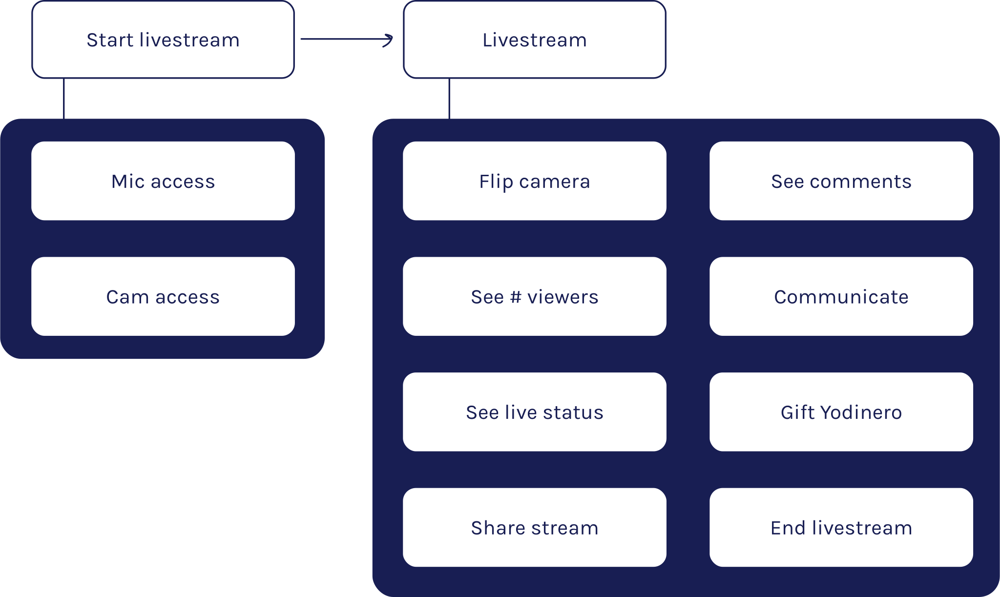

PRODUCT DESIGN, VISUAL DESIGN, INTERACTION DESIGN
Creating an intuitive livestreaming experience for influencers.
Team: Annie Zeng (Design Lead), me
Role: Design Intern
Tools: Figma
Timeline: May 2020 (1 week)
Yonder Media Mobile is an atypical telecom company. YO, their product, is a superapp that combines connectivity, content, community, and commerce in a single mobile platform. Users can earn Yodinero, the in-app currency, by interacting with YO content: AR games, listening to exclusive mixtapes, live videos, etc. Yodinero can be converted into data or spent on in-app purchases.
YO partners with celebrities, brands, and influencers. Through livestreams, these partners can create a personal connection with YO’s user base.
How might we provide an intuitive experience for streamers who go live?
Because we didn’t have resources for primary research & usability testing, I used
For clarity, I separated entire flow into two major sections: Pre-livestream and Livestream.
